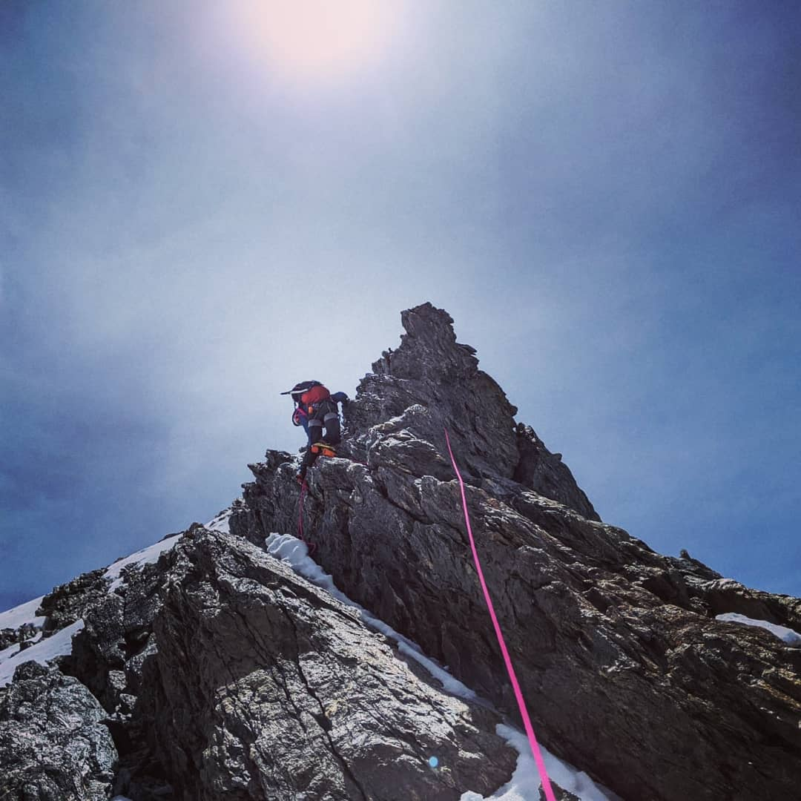

I am currently a Daly postdoctoral fellow at Harvard University interested in the evolution of terrestrial planets and planetary magnetism with a focus on Mars.
I investigate planetary interiors by extracting information that is recorded by crustal magnetic fields and by using electromagnetic sounding techniques.
I am also interested in external magnetic fields, fields generated outside the planetary body, such as the ionosphere and the interplanetary magnetic field, and how those fields interact with the planet.
My favourite mission is InSight (I might be biased) and I have been collaborator of the mission team since 2013. I co-chair the magnetics working group in which we discuss findings of the first magnetometer on the martian surface!
Playing outside, Patagonia, 2020
Contact
Earth and Planetary Sciences
Harvard University
20 Oxford street, Cambridge, MA, 02138
Hoffman Lab
amittelholz (at) fas (dot) harvard (dot) edu